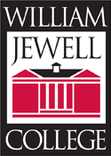
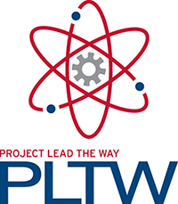
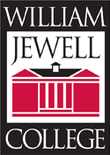
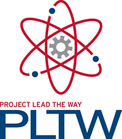
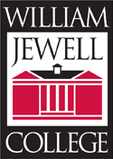
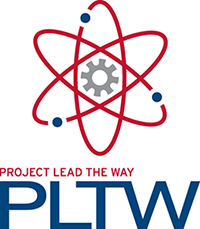

| For more information, please contact Colleen Jones at (816)736-5320 or cjones@liberty.k12.mo.us |
Sponsored by: 



|
Website created by Liberty North High School students |
TSA (Technology Student Organization)chapters take the study of STEM (science, technology, engineering, mathematics) beyond the classroom and give students the chance to pursue academic challenges among friend with similar goals and interests. Together, chapter members work on competitive events, attend conferences on the state and national levels and have a good time raising funds to get there. Chapter organization develops leadership, as members may become officers within their state and then run nationally. Our chapters are committed to a national service project and are among the most service-orientated groups in the community.
For additional information about TSA, please contact:
Mrs. Angela Klein| For more information, please contact Colleen Jones at (816)736-5320 or cjones@liberty.k12.mo.us |
Sponsored by:


|
Website created by Liberty North High School students |